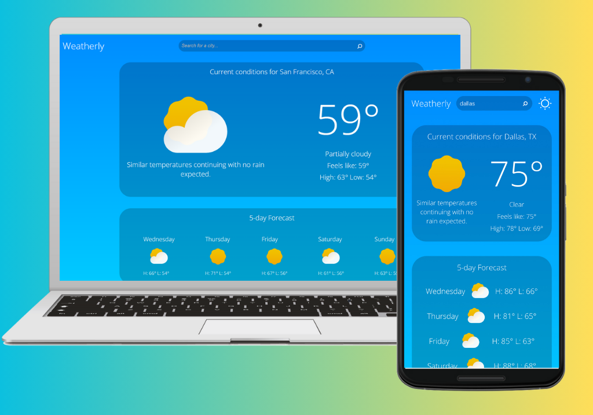
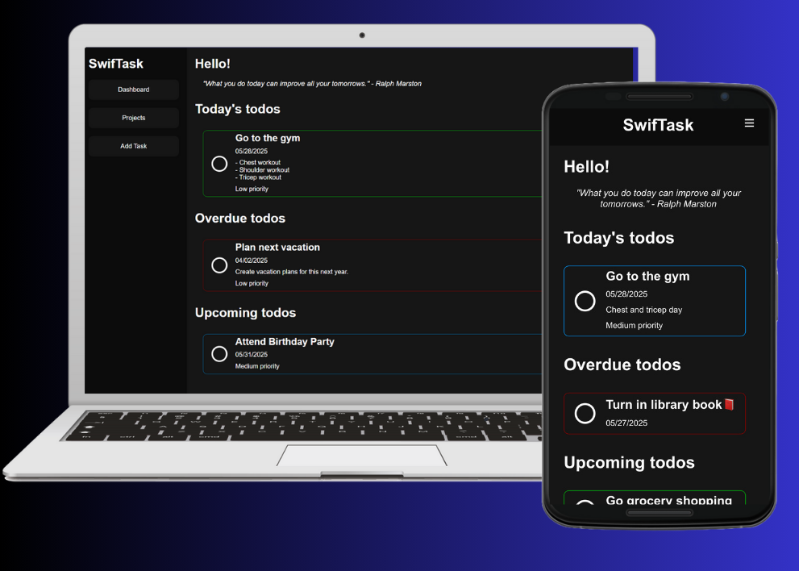
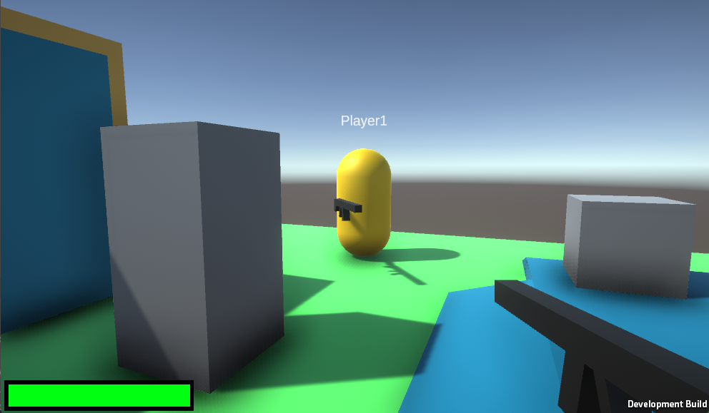
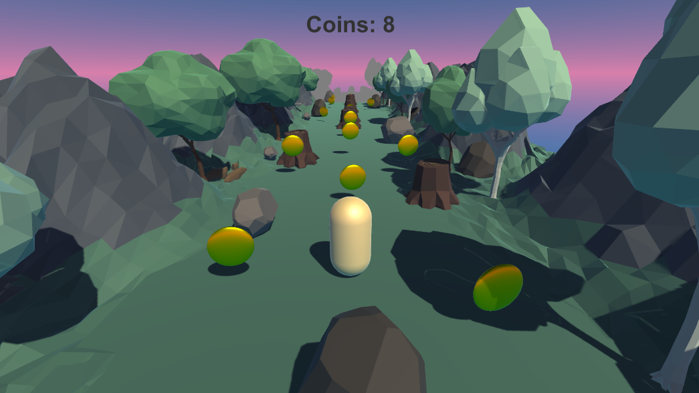
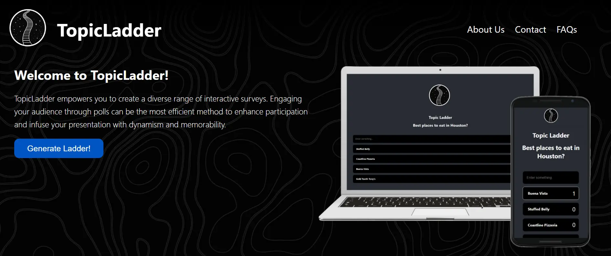

Allow me to introduce myself.
I am a self-motivated Computer Science graduate from the University of Texas at Tyler, where I earned my degree in May 2024. I am proficient in programming languages such as JavaScript, C, Java, HTML, CSS, and Unity/C#, with a particular focus on web development. Throughout my four-year academic journey, I had the opportunity to collaborate with talented peers on various projects. These experiences have been instrumental in my personal and intellectual growth, reinforcing my dedication to continuous learning.
My career aspirations revolve around securing a position in web development, while remaining receptive to other promising avenues within the realm of software development. I am unwavering in my commitment to continuous learning and will go to great lengths to consistently deliver work of the utmost quality. Challenges are not obstacles, but rather opportunities that I wholeheartedly embrace.
In my spare time, I find great pleasure in the duality of my interests. Coding and learning serve as a constant source of intellectual engagement, allowing me to explore the ever-evolving world of technology. Simultaneously, I enjoy the opportunity to balance this with the camaraderie of my friends, often attending car events where our shared passion for automotive culture flourishes. This unique blend of pursuits grants me a well-rounded and fulfilling leisure experience, supporting both my analytical and social dimensions.
Technical Skills
- JavaScript
- HTML
- CSS
- Unity/C#
- ReactJS
- Java
- C
- Unreal Engine
Featured Projects
Weatherly
Weatherly is a responsive weather app built with vanilla JavaScript, HTML, and CSS, and modularized using Webpack. Created as part of The Odin Project curriculum, it showcases practical JavaScript skills such as API integration, modular code structure, form handling, and responsive UI design. Weatherly fetches real-time data from the Visual Crossing API and features theme toggling, persistent settings, city search, and mobile-friendly layouts—delivering a smooth and modern user experience.
SwifTask
SwifTask is a minimalist task management app built from scratch using vanilla JavaScript, HTML, and CSS, with a modular architecture powered by Webpack. Developed as part of The Odin Project, it emphasizes clean code structure, dynamic UI rendering, and local storage for data persistence. Users can create tasks with due dates and priorities, organize them by project, and mark them as complete—all within a responsive and intuitive interface.
PixelStrike
PixelStrike is a fast-paced multiplayer FPS game built in Unity/C#, featuring real-time networking powered by Photon Unity Networking (PUN). Designed with a modular architecture and responsive UI, the game includes essential multiplayer mechanics such as player health systems, a live leaderboard, and a dynamic lobby system. Players can join matches, take damage, track scores, and personalize their experience with persistent player names saved via PlayerPrefs.
GeoDash
GeoDash is a dynamic 3D game developed in Unity that challenges players to run endlessly through a procedurally generated path while collecting coins and avoiding obstacles. Featuring smooth, responsive controls and immersive background music, the game offers a continuous, engaging experience designed to test reflexes and encourage high-score competition. The game speed progressively increases over time, adding to the challenge. Key features include a coin collection system, dynamic obstacle spawning, real-time score tracking, and an intuitive user interface.
TopicLadder (Capstone)
The Poll Creation and Voting App delivers a smooth and immersive user experience for those looking to engage in polls without the need for user authentication. I was responsible for designing and implementing the UI using custom CSS, ensuring a clean, intuitive, and responsive interface. This app offers a strong, real-time, and user-centric platform for both creating and participating in polls, making it accessible to a broad audience.
Experience
TechServ Engineering and Consulting
(January 2025 - Present)
Performed inspections of utility pole construction using proprietary drafting software, ensuring compliance with NESC safety standards. Made design edits and provided recommendations to maintain safety and adhere to protocols for communication and power companies. Tracked permit statuses efficiently using Microsoft Excel.
Discount Tire Co.
(August 2020 - January 2025)
In a dynamic and high-paced work setting, I led a team of up to five skilled technicians, ensuring not only their efficiency but also the overall organization of operations. My role extended to effective customer communication, guaranteeing that their specific requirements were met to their satisfaction. Furthermore, I took on the responsibility of promptly resolving any challenges encountered by the technicians during their service tasks, ultimately streamlining job completion and enhancing overall efficiency.